Vtree2 User Guide
vtree2.RmdQuick start
library(vtree2)
# example data set - same as Titanic, but with NAs
data(titanicNA)
# variables to show: Class and Survived
vt <- vtree(titanicNA, Class, Survived)
plot(vt, legend = TRUE)
plot(vt, layout = "proportional")
For more information what the vtrees are and how to use them, see the What are Vtrees? vignette. Read on for the full user manual.
Vtree workflow
In vtree2, the workflow is split into several steps:
- Prepare the data (outside of
vtree2) - Build the vtree object with
vtree()orvtree_from_freqtable() - (Optional) Prune, retain or select nodes with
prune(),retain()and friends. - (Optional) Create summaries with
summarize_by_node()andfmt_label(). - (Optional) Add aliases for variable names and values with
add_aliases(). - (Optional) Add or modify labels with
add_labels()andmutate(). - (Optional) Add or modify colors with
add_palette()andmutate(). - Plot the vtree with
plot().
Here is an example demonstrating all these steps based on the
titanicNA data set. This data set is the same as the
Titanic data set, but with some missing values randomly added for
demonstration purposes.
data(titanicNA)
vtree(titanicNA, Class, Sex, Survived) |>
# only retain the third class passengers
retain(path == "Class:3rd") |>
# change how variables are displayed
add_aliases(val_alias = list(Class = c("1st" = "First",
"2nd" = "Second",
"3rd" = "Third"))) |>
# add default labels, built from aliases
add_labels() |>
# change the labels for the missing values
mutate(label = gsub("NA", "Missing", label)) |>
# add colors
add_palette(palettes = c("Greys", "Blues", "Purples"),
na = "grey90") |>
# change the color for Females who survived
# mark() adds a column `mark` to the vtree object, which is TRUE for
# nodes that match the given condition
mark(path == "Class:3rd/Sex:Female/Survived:Yes") |>
mutate(fill = ifelse(mark, "red", fill)) |>
mutate(color = ifelse(mark, "white", color)) |>
mutate(label = ifelse(mark, sprintf("**%s**", label), label)) |>
# plotting with legend and custom margins
plot(legend = TRUE,
richtext = TRUE,
margins = c(0.05, 0.05, 0.25, 0.05))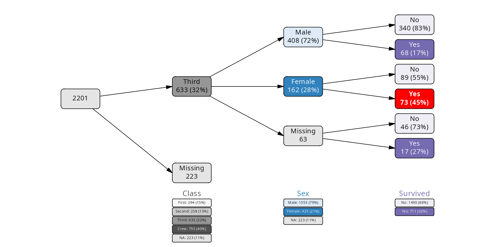
Building vtree objects
Case data
Vtrees are primarly built from case data: matrices or data
frames in which each row corresponds to a single sample. Each column is
a data variable and can be selected to be used and displayed on a vtree.
For example, consider the built-in data set titanicNA. This
is the same data set as Titanic from the
datasets package, except that it is a cases data frame and
some of the values were replaced by NAs to simulate missing data:
data(titanicNA)
head(titanicNA)
#> # A tibble: 6 × 4
#> Class Sex Age Survived
#> <fct> <fct> <fct> <fct>
#> 1 3rd Male Child No
#> 2 3rd Male Child No
#> 3 3rd NA Child No
#> 4 3rd Male Child No
#> 5 3rd Male Child No
#> 6 NA NA Child NoAs you can see, we have four variables: Class,
Sex, Age and Survived. Each of
the 2201 rows corresponds to a single passenger.
The vtree() function then collects the levels of each
selected variable and counts the number of samples for each combination
of levels:
vt <- vtree(titanicNA, Class, Survived)
vt
#> vtree object with 2 variables and 2201 observations
#> Variables: Class, Survived
#> Frequencies computed as valid percentages (vp == TRUE)
#> Overview:
#> # Tibble (class tbl_df) 6 x 16:
#> │path │n │freq │tot_n│missing│denom
#> 1│root │ 2201│ 1.00│ 2201│ NA│ 2201
#> 2│Class:1st │ 294│ 0.15│ 2201│ 223│ 1978
#> 3│Class:2nd │ 258│ 0.13│ 2201│ 223│ 1978
#> 4│Class:3rd │ 633│ 0.32│ 2201│ 223│ 1978
#> 5│Class:Crew │ 793│ 0.40│ 2201│ 223│ 1978
#> 6│Class:NA │ 223│ 0.11│ 2201│ 223│ 1978
#> 7│Class:1st/Survived:No │ 114│ 0.39│ 294│ 0│ 294
#> 8│Class:1st/Survived:Yes │ 180│ 0.61│ 294│ 0│ 294
#> 9│Class:2nd/Survived:No │ 151│ 0.59│ 258│ 0│ 258
#> 10│Class:2nd/Survived:Yes │ 107│ 0.41│ 258│ 0│ 258
#> 11│Class:3rd/Survived:No │ 475│ 0.75│ 633│ 0│ 633
#> 12│Class:3rd/Survived:Yes │ 158│ 0.25│ 633│ 0│ 633
#> 13│Class:Crew/Survived:No │ 601│ 0.76│ 793│ 0│ 793
#> 14│Class:Crew/Survived:Yes│ 192│ 0.24│ 793│ 0│ 793
#> 15│Class:NA/Survived:No │ 149│ 0.67│ 223│ 0│ 223
#> 16│Class:NA/Survived:Yes │ 74│ 0.33│ 223│ 0│ 223Note that you select the variables that you want to consider in your
vtree - in the above example, we do not care about Sex or Age. Also note
that the variables follow the tidyverse logic - they are data
vars, and do not need to be quoted. If you need to use a variable
name that is stored in another variable, or if the variable names are
not valid R identifiers, you can use tidyselect::all_of()
to select the variables.
That is one way to construct vtrees. The other is to use frequency tables.
Frequency data
Often the data is already summarized in a frequency table, where each row corresponds to a combination of levels of the selected variables, and there is a column with the number of samples in which this combination occurs.
There are two functions to construct vtrees from frequency tables:
vtree_from_freqtable() and
cases_from_freqtable(). The first one constructs the vtree
directly from the frequency table, while the second one first expands
the frequency table into a cases data frame which you can use to
construct the vtree with vtree().
The original Titanic data set is a cross-tabulation of the four
variables. When converted to a data frame, it becomes a frequency table,
with the column Freq containing the number of passengers
for each combination of levels of the four variables:
head(as.data.frame(Titanic))
#> Class Sex Age Survived Freq
#> 1 1st Male Child No 0
#> 2 2nd Male Child No 0
#> 3 3rd Male Child No 35
#> 4 Crew Male Child No 0
#> 5 1st Female Child No 0
#> 6 2nd Female Child No 0
cases <- cases_from_freqtable(Titanic)
vt <- vtree(cases, Class, Survived)
# or do it directly:
vt <- vtree_from_freqtable(Titanic, Class, Survived)Data preparation
The vtree object constructors (vtree() and
vtree_from_freqtable()) can only use factors and character
values. They flatly refuse to process numeric or logical columns. This
is by design: numeric and logical values are not categorical, and vtrees
are meant to visualize categorical data.
Also, converting numerical or logical values to factors or character vectors is easy. It is best done with regular R code.
Valid percentages
One of the important concepts to know about are the valid percentages. In short, a valid percentage is the number of samples with a given value of a variable divided by the total number of samples for which this variable is not missing.
If you have 50 males, 50 females and 100 samples for which the sex is unknown, then the number of males divided by the total number of samples may be misleading (25%); valid percentages are calculated only from the 100 samples for which the sex is known and the proportion of males and females is 50% each.
The vtree() and vtree_from_freqtable()
functions by default calculate valid percentages; if you want to
calculate the absoluet frequencies, use the
.vp=FALSEargument to these functions.
Once the vtree has been constructed, this cannot change. Any operations downstream (like selecting and pruning nodes and modifying their labels) will not change the calculated percentages.
Vtree objects
You can inspect the vtree object with a number of methods.
# names of the column variables associated with the nodes
names(vt)
#> [1] "Class" "Survived"
# available levels of the different column variables:
levels(vt)
#> $Class
#> [1] "1st" "2nd" "3rd" "Crew"
#>
#> $Survived
#> [1] "No" "Yes"
# summary frequency data for each node variable
summary(vt)
#> # A tibble: 8 × 6
#> node_col node_val count freq denom label
#> <chr> <chr> <int> <dbl> <int> <chr>
#> 1 Class 1st 325 0.148 2201 1st: 325 (15%)
#> 2 Class 2nd 285 0.129 2201 2nd: 285 (13%)
#> 3 Class 3rd 706 0.321 2201 3rd: 706 (32%)
#> 4 Class Crew 885 0.402 2201 Crew: 885 (40%)
#> 5 Class NA 0 0 2201 Missing: 0
#> 6 Survived No 1490 0.677 2201 No: 1490 (68%)
#> 7 Survived Yes 711 0.323 2201 Yes: 711 (32%)
#> 8 Survived NA 0 0 2201 Missing: 0
# check whether the vtree is calculated using valid
# percentages or absolute frequencies
is_vp(vt)
#> [1] TRUEThe vtree objects contain a data frame of nodes with a number of associated columns, which include:
-
node_key- a unique identifier for each node -
node_id- a unique integer identifier for each node -
node_col- the name of the column variable associated with the node -
node_val- the value of the variable associated with the node -
freq- the percentage of samples within the node that have the givennode_val -
n- the number of samples in the current node -
missing- the number of missing samples in the current node -
tot_n- the number of samples in the parent node -
denom- the number of samples within the node that have a non-missing value for the variable associated with the node. This is equal totot_nonly if the tree was not constructed with valid percentages. Otherwise, it is equal to the number of samples in the parent node that have a non-missing value for variablenode_col.
Some other columns may be added later with mutate() or
with the various add_*() functions, for example:
-
label- the label to be displayed on the node -
fill- the fill color of the node -
color- the text color of the label -
x,y,width,height- layout information for the node
You can inspect the columns of the vtree object with
nodecols(), which is just a wrapper around
colnames(as_tibble(vt)):
nodecols(vt)
#> [1] "path" "node_id" "node_key" "parent" "parent_id" "path_l"
#> [7] "level" "node_col" "node_val" "n" "tot_n" "missing"
#> [13] "freq" "denom" "leaf"You can convert the vtree object to a data frame with
as_tibble:
as_tibble(vt)
#> # A tibble: 13 × 15
#> path node_id node_key parent parent_id path_l level node_col node_val
#> <chr> <int> <chr> <chr> <int> <list> <dbl> <chr> <chr>
#> 1 root 1 node_1 NA NA <lgl [1]> 0 root ""
#> 2 Class… 2 node_2 root 1 <named list> 1 Class "1st"
#> 3 Class… 3 node_3 root 1 <named list> 1 Class "2nd"
#> 4 Class… 4 node_4 root 1 <named list> 1 Class "3rd"
#> 5 Class… 5 node_5 root 1 <named list> 1 Class "Crew"
#> 6 Class… 6 node_6 Class… 2 <named list> 2 Survived "No"
#> 7 Class… 7 node_7 Class… 2 <named list> 2 Survived "Yes"
#> 8 Class… 8 node_8 Class… 3 <named list> 2 Survived "No"
#> 9 Class… 9 node_9 Class… 3 <named list> 2 Survived "Yes"
#> 10 Class… 10 node_10 Class… 4 <named list> 2 Survived "No"
#> 11 Class… 11 node_11 Class… 4 <named list> 2 Survived "Yes"
#> 12 Class… 12 node_12 Class… 5 <named list> 2 Survived "No"
#> 13 Class… 13 node_13 Class… 5 <named list> 2 Survived "Yes"
#> # ℹ 6 more variables: n <int>, tot_n <int>, missing <int>, freq <dbl>,
#> # denom <int>, leaf <lgl>Vtree objects as graphs
The vtree class is a wrapper around the
tbl_graph class from package tidygraph. It is
a directed graph, where each node corresponds to a combination of levels
of the selected variables. The tbl_graph class itself
inherits from igraph, which means that you can use all of
the igraph functions on vtree objects:
igraph::degree(vt)
#> [1] 4 3 3 3 3 1 1 1 1 1 1 1 1Since the default plotting function for igraph objects
is replaced by vtree2’s own plot.vtree(), if
you want to use igraph’s plotting function, you need to
convert the vtree object to a tbl_graph object first:
vt_tbl <- as_tbl_graph(vt)
plot(vt_tbl)
Tidy selection of variables
The selection of columns in vtree() and related
functions follows the tidyselect rules. You don’t quote the
data var names, you can use : to select a range or
- to exclude a variable. For programmatic selection, use a
character vector and tidyselect::all_of() to select the
variables. The following are equivalent:
Pruning, retain and selecting
Pruning and keeping
Quite often, we don’t want to show the whole tree, but only selected
nodes. For this, you can use the functions prune() and
retain(). Each has a few pecularities and defaults.
Pruning a node means: remove the node from the tree,
along all the nodes that follow it. However, with the parameter
follow_only=TRUE, all the following nodes will be pruned,
but the given node will be kept.
Retaining means that you indicate which nodes you would like to keep, and prune all other nodes.
Both pruning and retaining take a logical expression as an argument.
The expression is evaluated in a particular context: you can use both
all the node data frame columns (i.e., data vars such as
freq, n or path), as well as the
node variables (like Class or Survived). All
this works naturally: you can specify that you want only to see the node
where Class == "1st" or all nodes where
freq > 0.5.
# all variables except for Age
vt <- vtree_from_freqtable(Titanic, -Age)
p1 <- plot(vt)
# show only 1st class passengers
p2 <- vt |>
retain(Class == "1st") |>
plot(legend = FALSE, lwidth =.8)
# remove nodes with low frequency or number
p3 <- vt |>
prune(freq < .2 | n < 20) |>
plot(legend = FALSE, lwidth =.8)
# show only combinations of factors where more than a quarter of passengers
# survived
p4 <- vt |>
retain(Survived == "Yes" & freq > .25) |>
plot(legend = FALSE, lwidth =.8)
plot_grid(p1, p2, p3, p4, nrow = 2,
labels=c("Original", "Retained Class:1st",
"Pruned freq < .2 | n < 20",
"Retained freq > .25 & Survived:Yes"),
label_size = 10)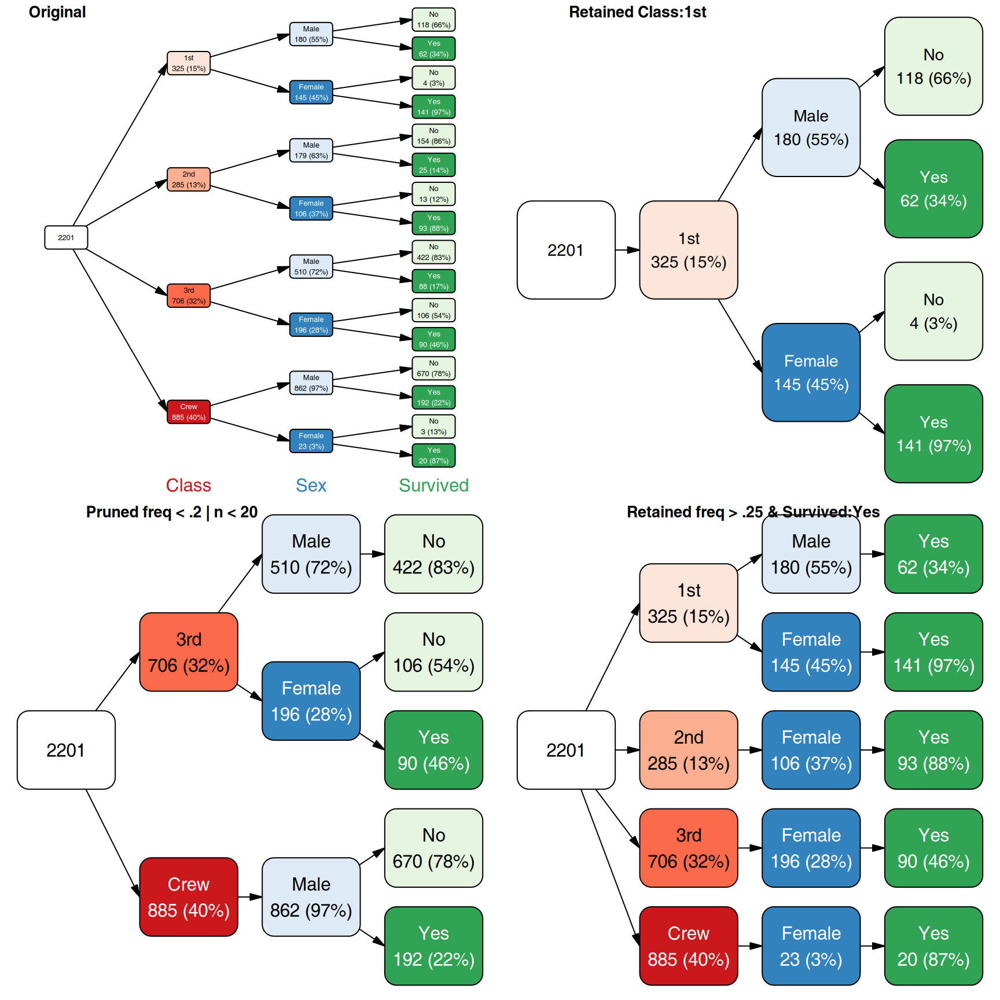
Valid percentages and NA nodes. There is one
pecularity about how the NA nodes are shown. If you try to prune a node
corresponding to a missing value, it will still be shown - if the tree
was constructed with the so-called “valid percentages”
(.vp=TRUE, default). VP means that the denominator used to
calculate frequencies on the tree was the number of valid
samples, i.e. excluding the missing values. Therefore, without the NA
node shown for a VP-based tree, you lack information necessary to
understand the percentages shown.
# all variables except for Age
vt <- vtree(titanicNA, -Age)
p1 <- vt |>
# this should prune the NA nodes, but doesn't
retain(Class %in% c("1st", "2nd")) |>
prune(is.na(Sex)) |>
plot(legend = FALSE, lwidth=.8)
vt_novp <- vtree(titanicNA, -Age, .vp = FALSE)
p2 <- vt_novp |>
# this one prunes the NA nodes, b/c the tree
# is created with .vp = FALSE
retain(Class %in% c("1st", "2nd")) |>
prune(is.na(Sex)) |>
plot(legend = FALSE, lwidth=.8)
plot_grid(p1, p2, nrow = 1,
labels = c("VP",
"No VP"))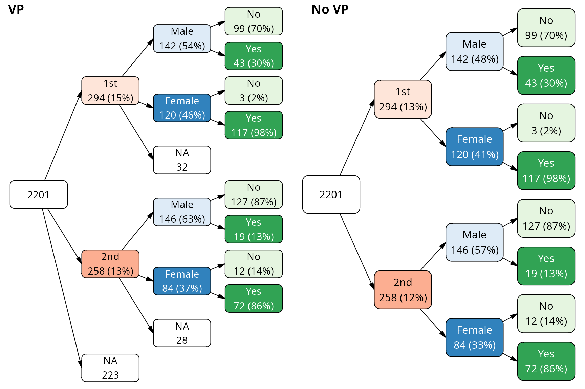
Targetting nodes. Quite often, you want to pick one
particular node and either prune it or select only that node for
plotting. The path column contains a human-readable
specification of the node which makes picking a certain node easy. For
example, if you want to keep only the node corresponding to males from
3rd class (and the following nodes), you can ask for nodes where path is
equal to "Class:3rd/Sex:Male":
vt <- vtree_from_freqtable(Titanic)
p1 <- plot(vt, legend = FALSE, dir="tb", show_root = FALSE)
p2 <- vt |>
retain(path == "Class:3rd/Sex:Male") |>
plot(legend = TRUE, dir="tb", show_root = FALSE)
plot_grid(p1, p2, nrow = 1, labels = c("Original tree", "Retained node"))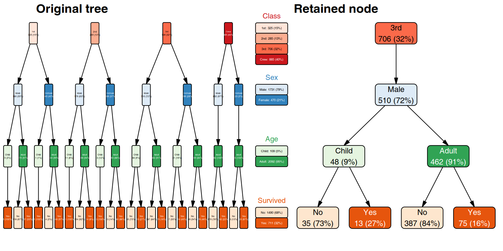
Note that the legend shown on the left in the above plot still contains all the other variable levels, even if you can’t see them on the tree. This is on purpose: the stat summaries in the legend correspond to the whole data set on which the tree was built, and not only the portion that is shown in the tree.
Finding and marking
Sometimes rather than change the visibility of selected nodes by
pruning or retaining, you might want to change their color or label
instead. For this, you can use find_nodes() to get a
logical vector indicating which nodes match a certain condition or
mark() to produce a vtree object with a new column,
mark, holding that logical vector.
vt <- vtree(titanicNA, Class, Survived)
# which nodes have a low frequency?
mask <- find_nodes(vt, freq < 0.2)
as_tibble(vt) |> filter(mask)
#> # A tibble: 3 × 15
#> path node_id node_key parent parent_id path_l level node_col node_val
#> <chr> <int> <chr> <chr> <int> <list> <dbl> <chr> <chr>
#> 1 Class:… 2 node_2 root 1 <named list> 1 Class 1st
#> 2 Class:… 3 node_3 root 1 <named list> 1 Class 2nd
#> 3 Class:… 6 node_6 root 1 <named list> 1 Class NA
#> # ℹ 6 more variables: n <int>, tot_n <int>, missing <int>, freq <dbl>,
#> # denom <int>, leaf <lgl>
# mark nodes with low frequency with pink
# all other nodes will be white
vt |> mark(freq < .2) |>
mutate(fill = ifelse(mark, "pink", "white")) |>
plot()
#> ℹ palette attribute is NULL
#> legend will be black and white
Adding column and value aliases
If you prefer to see a different name for the variable or its values on the plot, there are basically two approaches.
First, you can just recode or rename the variables in the data from which you build the vtree. This has an advantage: you ensure that the labels you see on the plot are the same as in the original data. For example, you can do the following:
cases <- as_tibble(Titanic) |>
mutate(Class = recode(Class, "1st" = "First", "2nd" = "Second",
"3rd" = "Third")) |>
cases_from_freqtable(.freq_col = "n")
vtree(cases, Class, Survived) |> plot()
However, some times what you want to see on the plot is not
convenient to work with in the data, for example if you want to show a
longer description of the possible values, add Unicode characters or
markdown / HTML formatting for rich text labels. In this case, you can
specify an alias for either using the col_alias and
val_alias arguments of add_aliases(). Not all
variables or all levels (values) need to be specified, only those you
want to change:
col_alias <- list(Class = "Passenger\nClass",
Sex = "Gender",
Age = "Age\nGroup",
Survived = "Survival\nStatus")
val_alias <- list(NAs = "Missing",
Class = c("1st" = "First",
"2nd" = "Second",
"3rd" = "Third"))
vtree(titanicNA, Class, Survived) |>
add_aliases(col_alias = col_alias,
val_alias = val_alias) |>
plot(legend = TRUE, dir="tb", show_root = FALSE,
margins = c(0.05, 0.05, 0.05, 0.10))
The special NAs name is used for all missing values,
regardless of the variable.
Unnecessary gory details:
-
add_aliases()andadd_labels()always ensure that columnscol_aliasandval_aliasare present in the vtree object. - If no custom format is specified, these two columns will be
identical to the
node_colandnode_valcolumns, respectively. - In addition, the alias information is stored in the
aliasattribute of the vtree object, which is subsequently used byplot()to create the legend.
Adding and modifying labels
Labels to be plotted are taken from the label column of
the vtree object. If this column is missing, plot() calls
add_labels() to add default labels. For custom labels there
are three routes:
- directly add a label column to the vtree object with
mutate() - use
add_labels()with a custom format - first use
add_labels(), then modify the label column withmutate()
Directly creating a label column with mutate()
Since the mutate() function is called in the context of
the vtree node data frame, you can use any of the columns of the vtree
object directly. For example, you can show the node_key
column, a unique identifier for each node.
vtree(titanicNA, Class, Survived) |>
mutate(label = paste0("node_key:\n", node_key)) |>
plot(legend = FALSE)
Using add_labels() to add default or custom labels
The add_labels() function can produce two types of
default labels: “simple” and “long”, chosen through the
template argument:
vt <- vtree(titanicNA, Class)
p1 <- add_labels(vt) |> plot() # template = "simple"
p2 <- add_labels(vt, template = "long") |> plot()
plot_grid(p1, p2, nrow = 1)
These labels are derived directly from columns of the vtree object:
col_alias, val_alias, freq and
n. If no aliases are set, then col_alias is
the same as node_col, and val_alias is the
same as node_val.
It is quite normal to call add_labels() multiple times,
for example to conditionally add labels. The following makes simple
default labels and adds a more informative label only to the leafs on
the tree:
vt <- vtree(titanicNA, Class, Survived)
mask <- pull(vt, leaf) # leaf is a logical vector
# indicating whether a node is a leaf node
vt |>
add_labels(template = "sameline") |>
add_labels(mask = mask, template = "long") |>
plot()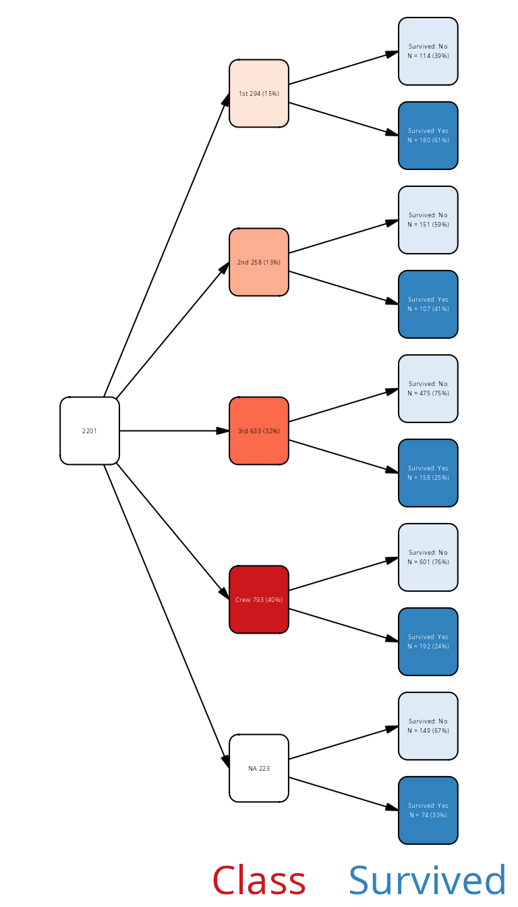
Using custom formatting
By default, add_labels() produces simple node labels
containing the associated variable value, number of cases and percentage
within the parent node. This can be customized by one of the
following:
- choose a different
templateparameter:short(default),sameline(same as short, but on one line) orlong(with variable names). The templates all reasonably handle NA nodes and root node. - use a [glue::glue()] syntax for the parameters
fmt,fmt_naandfmt_root, where variable names are put in curly braces. The variable names are the same as column names of the node data frame of the vtree object, pluspctandf(see below). The three parameters will be used to generate regular, NA-nodes or root node labels, respectively. - use an arbitrary R expression (parameter
expr) which is evaluated with [rlang::eval_tidy()] in the context of the nodes data frame of the vtree object.
Both the glue format syntax and the arbitrary expression syntax can use any column name which is already present in the nodes data frame, including:
-
freq, the frequency for a node -
n, number of samples of a node -
col_alias, the alias for the column/variable associated with a node (default same as node_col, but can be modified by providing avar_aliascolumn in the vtree) -
val_alias, the alias for the value of the variable associated with a node (default same as node_val, but can be modified by providing aval_aliascolumn in the vtree) -
node_col, name of the variable associated with a node -
node_val, value of the variable associated with a node - plus whatever new columns you have added to the vtree with mutate().
You can list the columns in the node data frame of a vtree object
with nodecols(vt) (or simply
colnames(as_tibble(vt))).
In addition, add_labels() provides two additional,
preformatted values:
-
pct, percentage rounded to the specified number of digits (thedigitsparameter) -
f, equal to pct / 100 (so if the percentage is rounded with 0 digits after decimal point,fwill have two digits after decimal point).
Here is a formatting example with the fmt_*
parameters.
vt <- vtree(titanicNA, Class, Sex) |>
add_labels(fmt = "{node_col}: {node_val}\nfreq={f} ({pct}%)\nN={n}",
fmt_na = "{node_col}: Missing\nN={n}",
fmt_root = "All data:\nN = {n}")
plot(vt, legend = FALSE)
Using the expr parameter
If you need even finer control, you can use the expr
parameter which takes any R expression and evaluates it with
[rlang::eval_tidy()] in the context of the nodes data frame
of the vtree object (plus the variables pct and
f).
vt <- vtree(titanicNA, Class, Survived) |>
add_labels() |> # add default labels
add_labels(expr =
ifelse(node_col != "Survived",
label,
paste0(
ifelse(freq > .5, "Many ", "Few "),
ifelse(node_val == "Yes", "survived", "perished"),
"\n",
label
)
))
plot(vt, legend = FALSE)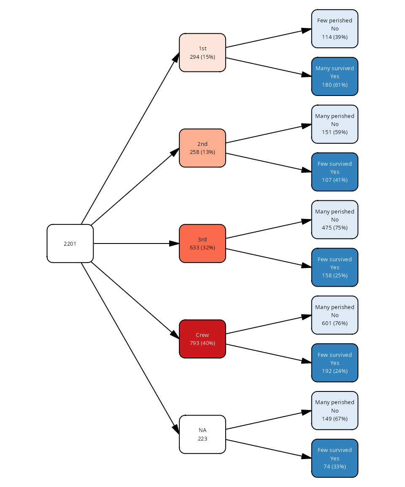
Using a mask
You can specify a mask with add_labels() - a logical
vector with the same length as the number of nodes - to indicate which
nodes should have their labels modified. For example, you may want a
different information for the leaf nodes as for other nodes:
vt <- vtree_from_freqtable(Titanic, Class, Sex, Survived) |>
retain(path == "Class:1st") # only keep the first class passengers
mask <- find_nodes(vt, leaf) # leaf is a logical vector
add_labels(vt, mask = mask, template = "long") |>
add_labels(mask = !mask, fmt = "{node_val}") |>
plot(legend = FALSE, dir="tb", show_root = FALSE,
lwidth = 0.7, lheight = 0.5)
Parameter precedence with add_labels()
If expr is not NULL, it will be used for all labels
chosen by the mask.
If fmt is NULL, the selected template will be used. If
fmt_na is NULL and fmt is not NULL, then
fmt_na will be fmt, otherwise the selected
template will be used. Same for fmt_root: first
fmt, if defined, otherwise the template.
fmt_na is used for NA values only if
is_vp(vtree) is TRUE; this is because for a vp
tree the NA value percentages are meaningless.
Creating summaries
One of the more useful aspects of using vtrees is that you can partition the data using a set of variables and then show summary information for another variable. For example, consider the ToothGrowth data set, containing two categorical variables – dose and type of supplement – as well as numeric result. We can use the categorical variables for data splits and ask what the average tooth growth is at the different nodes.
# make sure that dose is a factor
tg <- ToothGrowth |>
mutate(dose = factor(paste("Dose", dose)))
vt <- vtree(tg, supp, dose)
library(glue)
sm <- summarize_by_node(tg, vt, len) |>
fmt_label()
vt |>
add_aliases(col_alias = c(supp = "Supplement",
dose = "Dose (mg/day)")) |>
add_labels(template = "sameline") |>
add_labels(fmt = "{label}\n{sm}") |>
plot(lwidth=.75)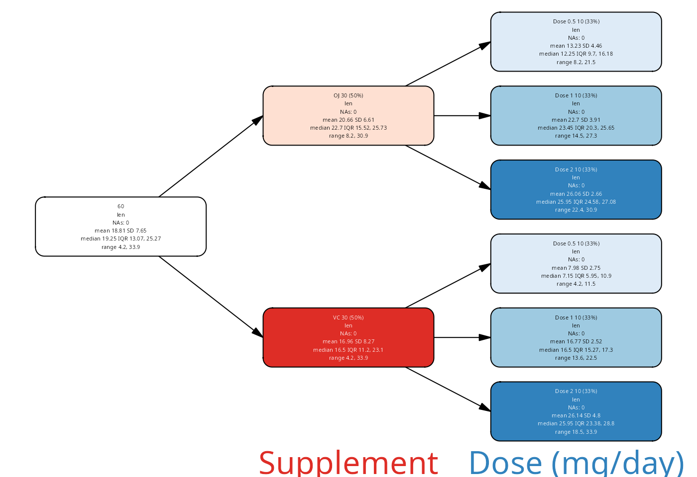
The above example demonstrates the main workflow of generating summaries:
- you need a cases data frame to generate summaries
- generate summaries in a separate step
- use
summarize_by_node()to compute,fmt_label()to format
It is also possible to include graphical summaries; see the section “Inset plots” for more details.
Summaries with summarize_by_node()
Each row of the data frame returned by summarize_by_node
corresponds to one row of the nodes data frame in the vtree, hence the
name of the function.
The columns in the data frame returned by
summarize_by_node depend on whether the data is categorical
or numeric. For numeric data, as above, the columns include mean, sd, n,
quantiles 1, 3, and median, iqr, as well as the number of valid and
missing samples.
# numerical data
sm <- summarize_by_node(tg, vt, len)
head(sm)
#> # A tibble: 6 × 15
#> node_id path col type n mean sd min max median q1 q3
#> <int> <chr> <chr> <chr> <int> <dbl> <dbl> <dbl> <dbl> <dbl> <dbl> <dbl>
#> 1 1 root len nume… 60 18.8 7.65 4.2 33.9 19.2 13.1 25.3
#> 2 2 supp:OJ len nume… 30 20.7 6.61 8.2 30.9 22.7 15.5 25.7
#> 3 3 supp:VC len nume… 30 17.0 8.27 4.2 33.9 16.5 11.2 23.1
#> 4 4 supp:OJ/… len nume… 10 13.2 4.46 8.2 21.5 12.2 9.7 16.2
#> 5 5 supp:OJ/… len nume… 10 22.7 3.91 14.5 27.3 23.5 20.3 25.6
#> 6 6 supp:OJ/… len nume… 10 26.1 2.66 22.4 30.9 26.0 24.6 27.1
#> # ℹ 3 more variables: iqr <dbl>, valid <int>, missing <int>For categorical data, the function returns a data frame including
total number of observations, number of valid, missing and unique
observations, a list column containing the counts for each level of the
variable chosen, as well denom (denominator) and the
calculated frequencies of individual levels.
Here we return to the Titanic example and ask, what was the fraction
of women who survived or not for the different Classes. We use the
titanicNA data set, which contains some randomly introduced
missing data.
# categorical data
vt <- vtree(titanicNA, Class, Survived)
sm <- summarize_by_node(titanicNA, vt, Sex)
head(sm)
#> node_id path col type n valid missing unique levels
#> 1 1 root Sex categorical 2201 1978 223 3 1553, 425, 223
#> 2 2 Class:1st Sex categorical 294 262 32 3 142, 120, 32
#> 3 3 Class:2nd Sex categorical 258 230 28 3 146, 84, 28
#> 4 4 Class:3rd Sex categorical 633 570 63 3 408, 162, 63
#> 5 5 Class:Crew Sex categorical 793 718 75 3 698, 20, 75
#> 6 6 Class:NA Sex categorical 223 198 25 3 159, 39, 25
#> denom Male Male_freq Female Female_freq
#> 1 1978 1553 0.7851365 425 0.21486350
#> 2 262 142 0.5419847 120 0.45801527
#> 3 230 146 0.6347826 84 0.36521739
#> 4 570 408 0.7157895 162 0.28421053
#> 5 718 698 0.9721448 20 0.02785515
#> 6 198 159 0.8030303 39 0.19696970As when calculating the vtree, for calculating a frequency of a level
for a variable in the above summary (e.g. the frequency of females among
1st Class passengers), we can choose whether we use valid percentages or
not. That is, we have to decide whether we calculate the fraction as the
fraction of valid samples, or the fraction of total
samples at this node. In the above, the total fraction is
- we see that by looking at the denom (denominator) column
of the table above.
By default, summarize_by_node() uses the same procedure
as was used for the vtree provided as parameter. However, you may choose
to control this behavior with the vp parameter:
# categorical data
vt <- vtree(titanicNA, Class, Survived)
sm <- summarize_by_node(titanicNA, vt, Sex, vp=FALSE)
head(sm)
#> node_id path col type n valid missing unique levels
#> 1 1 root Sex categorical 2201 1978 223 3 1553, 425, 223
#> 2 2 Class:1st Sex categorical 294 262 32 3 142, 120, 32
#> 3 3 Class:2nd Sex categorical 258 230 28 3 146, 84, 28
#> 4 4 Class:3rd Sex categorical 633 570 63 3 408, 162, 63
#> 5 5 Class:Crew Sex categorical 793 718 75 3 698, 20, 75
#> 6 6 Class:NA Sex categorical 223 198 25 3 159, 39, 25
#> denom Male Male_freq Female Female_freq NAs NAs_freq
#> 1 2201 1553 0.7055884 425 0.19309405 223 0.10131758
#> 2 294 142 0.4829932 120 0.40816327 32 0.10884354
#> 3 258 146 0.5658915 84 0.32558140 28 0.10852713
#> 4 633 408 0.6445498 162 0.25592417 63 0.09952607
#> 5 793 698 0.8802018 20 0.02522068 75 0.09457755
#> 6 223 159 0.7130045 39 0.17488789 25 0.11210762The denominator above is equal to column n, total number
of cases per node.
Formatting statistics with fmt_label()
The function takes the output from summarize_by_node()
and converts it to a character vector of labels. By default, the
function looks into the type column of the data frame to
determine whether the summarized variable is categorical or numeric, and
serves either a categorical or numerical summary of the data.
The output can be customized either with glue format strings
(argument fmt) or R expressions (argument
expr). The following are equivalent:
vt <- vtree(titanicNA, Class, Survived)
sm <- summarize_by_node(titanicNA, vt, Sex, vp=FALSE)
txt1 <- fmt_label(sm, fmt="{missing} {n} {Male_freq}", digits=2)
txt2 <- fmt_label(sm, expr=glue("{missing} {n} {round(Male_freq, digits=2)}"))
all(txt1 == txt2)
#> [1] TRUEThere are two differences between fmt and
expr:
-
fmtuses rounded versions of numeric columns. Each numeric column is rounded with the specified number of digits (argumentdigits). -
exprallows any kind of R expression, including conditional expressions withifelse,if_elseandcase_when, and string formatting withsprintf,glueetc.
Custom statistics with vtree_apply()
Sometimes you need to calculate some per-node statistics which goes beyond simple descriptive statistics.
vtree_apply() goes through nodes in the vtree object,
and for each object, finds the matching rows in the cases
data frame. Then it calls the user-provided function and calls it with
some arguments.
The arguments are also configurable. By default, the function is
called with the subset of the original cases data frame
which corresponds to the given node. For example, we can calculate how
many samples there are for a node:
cases <- cases_from_freqtable(Titanic)
vt <- vtree(cases, Class, Survived)
vtree_apply(cases, vt, nrow) |> unlist()
#> node_1 node_2 node_3 node_4 node_5 node_6 node_7 node_8 node_9 node_10
#> 2201 325 285 706 885 122 203 167 118 528
#> node_11 node_12 node_13
#> 178 673 212
# same as:
vt |> pull(n)
#> [1] 2201 325 285 706 885 122 203 167 118 528 178 673 212However, you can configure that also to provide e.g. the logical selection vector. Say, we want, for each node, determine whether the male:female ratio in that node is significantly different from the rest of the data.
test_func <- function(sel) {
# root node includes all samples
if(sum(sel) == length(sel)) {
return(NA)
}
chisq.test(table(cases$Sex, sel))$p.value
}
pvals <- vtree_apply(cases, vt, test_func, .args="sel") |> unlist()
pvals_l <- format.pval(pvals, digits=2)
# color the nodes by p-value
logp <- floor(-log10(pvals))
pal <- colorRampPalette(c("white", "red"))(101)
# use simpler summaries
sm <- summarize_by_node(cases, vt, Sex) |>
fmt_label(fmt = "Females: {Female_freq * 100}", digits=2)
vt |> add_labels(suffix = sm) |>
add_labels(fmt = "{label}\n{pvals_l}",
fmt_root = "{label}") |>
mutate(fill = pal[logp + 1]) |>
plot()
#> ℹ palette attribute is NULL
#> legend will be black and white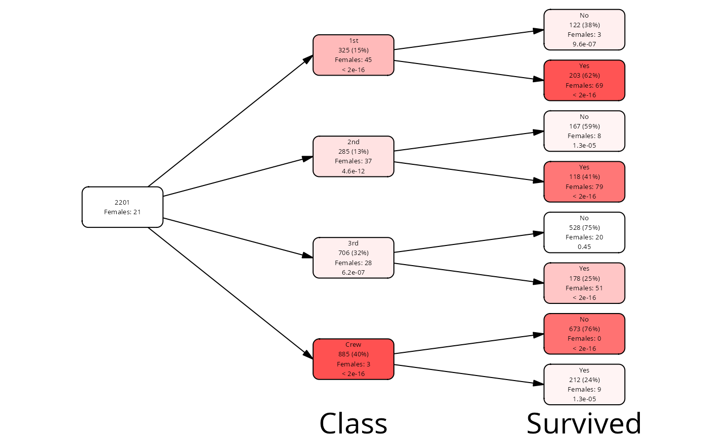
Adding and modifying colors
There are basically three ways of modifying colors shown on the plot and ont the legend:
- use
add_palette()withpaletteargument to assign a palette to each variable. You can use theRColorBrewerpalettes for that. This will change the colors both on the plot and on the legend. - use
add_palette()withvar_levelsandvar_colorsarguments to assign colors directly to each variable and variable level. This will change the colors both on the plot and on the legend. - change the columns
fillandcolorin the nodes data frame directly withmutate()(possibly after generating some defaults withadd_palette()). This will change the colors only on the plot, but not on the legend.
On the plot, the fill and color columns
determine how each node is colored; the palettes stored in the
palette attribute of the vtree object determine how the
legend is colored.
If the fill column is missing from the vtree object,
plot() will call add_palette() to assign fill
colors automatically. If color is missing, but
fill is present, then white or black will be chosen
automatically depending on the contrast with the fill color.
Modifying colors with mutate()
It is not necessary to call add_palette() if you just
want to change the color of the text and fill on the nodes, without
changing the legend:
pal <- colorRampPalette(c("white", "steelblue"))(101)
p1 <- vt |>
mutate(fill = pal[round(freq * 100) + 1]) |>
plot(lwidth=.6)
#> ℹ palette attribute is NULL
#> legend will be black and white
p2 <- vt |>
mutate(abs_freq = n / max(n)) |>
mutate(fill = pal[round(abs_freq * 100) + 1]) |>
plot(legend = TRUE, lwidth=.6)
#> ℹ palette attribute is NULL
#> legend will be black and white
plot_grid(p1, p2)
Colors can be also assigned automatically based on names of
RColorBrewer palettes. There is a default order of palettes for the
variables, but you can override it with the palettes
argument of plot() or add_palette().
Adding palettes with add_palette()
The add_palette() function not only sets the
fill and color columns, but also stores the
palette in the attribute palette of the vtree object. This
palette in turn is used to create color keys on the legend. If that
attribute is missing, the legend will be black and white.
Adding layout with add_layout()
Basic layout configuration with plot()
Layouts are added with the add_layout() function, which
you can call directly on the vtree object, resulting in a new vtree
object with additional columns for the layout. However, if a vtree
without a layout is passed to plot(), then
plot() will call add_layout()
automatically.
Currently, there are four layouts implemented: “regular”, “flushed_left”, “flushed_right” and “proportional”. The default layout is “regular”, which simply shows the tree structure with all nodes having the same sizes. The “flushed_*” layouts are similar, but the nodes are always flushed to one side of the plot.
The proportional layout shows the nodes with sizes proportional to the number of observations in that node.
# the default column name for .freq_col is "Freq", same as in Titanic,
# so no need to specify it here
vt <- vtree_from_freqtable(Titanic, Class, Sex, Survived)
p1 <- plot(vt) # layout regular
p2 <- plot(vt, layout = "proportional")
p3 <- plot(vt, layout = "flushed_left", dir="tb")
p4 <- plot(vt, layout = "flushed_right", dir="tb")
plot_grid(p1, p2, p3, p4, nrow = 2)
With the layout_func argument, you can specify a custom
function to calculate the layout yourself. For example, this function
might call add_layout() first and then adjust the
calculated positions of the nodes in some way. See the documentation for
add_layout() for details.
Layouts will be automatically created by plot() if they
are missing. The parameters passed to the plot give some basic control
over the layout: dir determines the direction of the tree,
show_root determines whether the root node is shown, and
lwidth/lheight determine the width and height
of the nodes relative to the available space.
vt <- vtree_from_freqtable(Titanic, Class, Survived)
p1 <- plot(vt)
p2 <- plot(vt, dir = "tb", show_root = FALSE, lwidth = 0.8, lheight = 0.3)
plot_grid(p1, p2, nrow = 1)
The plot() function simply calls
add_layout() to add the layout to the vtree object with the
specified parameters. Alternatively, you can call the function
add_layout() directly on the vtree object. The resulting
vtree contains the additional columns x, y,
width and height for the nodes and
x1, y1, x2, y2 for
the edges. You can then modify these columns directly.
Directly modifying the layout
In the following example we will modify a layout with pruned nodes. We will move the nodes on the right (leafs) hand up a bit upwards.
vt <- vtree_from_freqtable(Titanic, Class, Survived) |>
prune(Class %in% c("1st", "2nd"), follow_only = TRUE) |>
add_layout() |>
mutate(y = ifelse(leaf, y + height/2, y))
# we need to modify the edges as well, but for that we need information
# from the nodes
nodes <- as_tibble(vt)
vt <- mutate(vt, x1 = nodes$x[from], y1 = nodes$y[from],
x2 = nodes$x[to] - nodes$width[to]/2, y2 = nodes$y[to],
.edges = TRUE)
plot(vt)
Note how we mutate the edges with the .edge = TRUE
argument. This is different from tidygraph, where the
object (tree) can either be in activated “node” or “edge” mode. In
vtree2, the object is always in “node” mode (because it is
more practical), but on the rare occassion that you need to access the
edges, you can.
Fine control with
add_layout(varspace = ..., varsize = ...)
The add_layout() function has additional parameters:
varspace and varsize. These can assign the
amount of relative space available to the node depending on the variable
it is associated with. For example, we might want to show a long summary
which takes a lot of space for the leafs, but only short labels for the
internal nodes. You can tune the relative node sizes with these two
parameters.
cases <- cases_from_freqtable(Titanic)
vt <- vtree(cases, Class, Sex, Survived) |>
prune(Class == "Crew")
sm <- summarize_by_node(cases, vt, Age) |>
fmt_label()
# get the logical vector indicating whether the node is a leaf
mask <- pull(vt, leaf)
vt |>
add_labels() |>
add_labels(mask = mask, fmt = "{label}\n{sm}") |>
add_layout(dir="tb", lheight=.8,
varspace=c(root=1, Class=1,Sex=1,Survived=4)) |>
# legend = FALSE: not even column names on the margin
plot(legend = FALSE)
Note that both varspace and varsize
describe the node sizes along the axis of the plot. That is, for
horizontal layouts, they control the width of the nodes; for vertical
layouts, they control the height of the nodes.
Plotting
Objects of type vtree can be directly plotted with the
plot() method. If the labels, colors and layouts are
missing, then plot adds some automatic defaults by running (essentially)
vtree |> add_labels() |> add_colors() |> add_layout()
before plotting. Some of the arguments for these functions can be passed
directly to the plot() function.
Layouts
Parameters layout, dir,
show_root, lwidth, lheight are
passed to add_layout() to control the layout of the tree.
See above for details.
Legends with summaries
The legend shows a summary for each variable underneath or next to
the part of the tree which corresponds to this variable. Variable
summaries are calculated when vtree is constructed and stored in the
summary attribute of the vtree object. You can print them
with summary(vtree_object):
vt <- vtree_from_freqtable(Titanic, Class, Sex, Survived)
summary(vt)
#> # A tibble: 11 × 6
#> node_col node_val count freq denom label
#> <chr> <chr> <int> <dbl> <int> <chr>
#> 1 Class 1st 325 0.148 2201 1st: 325 (15%)
#> 2 Class 2nd 285 0.129 2201 2nd: 285 (13%)
#> 3 Class 3rd 706 0.321 2201 3rd: 706 (32%)
#> 4 Class Crew 885 0.402 2201 Crew: 885 (40%)
#> 5 Class NA 0 0 2201 Missing: 0
#> 6 Sex Male 1731 0.786 2201 Male: 1731 (79%)
#> 7 Sex Female 470 0.214 2201 Female: 470 (21%)
#> 8 Sex NA 0 0 2201 Missing: 0
#> 9 Survived No 1490 0.677 2201 No: 1490 (68%)
#> 10 Survived Yes 711 0.323 2201 Yes: 711 (32%)
#> 11 Survived NA 0 0 2201 Missing: 0The summaries will not change if you prune the tree, since they are tied to the data and not the tree structure:
mar <- c(0.05, 0.05, 0.33, 0.05)
p1 <- plot(vt, legend = TRUE, lwidth=.8, margins = mar)
p2 <- retain(vt, path == "Class:1st") |>
plot(legend = TRUE, lwidth=.8, margins = mar)
plot_grid(p1, p2, nrow = 1)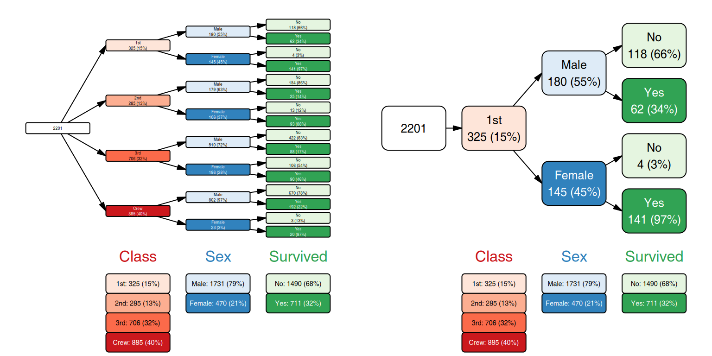
Other plot() arguments
lwidth, lheight - label
width and height relative to available space. The layout functions
calculate the available space for each node, and then these parameters
determine how much of that space is used for the label.
For the proportional layout, lheight is ignored, since
the height of the node is determined by the number of observations in
that node.
margins - a numeric vector of length 4,
specifying the top, right, bottom and left margins as fractions of the
total device space. So, for example, for 10% margins on all sides, use
margins = c(0.1, 0.1, 0.1, 0.1).
show_root - if TRUE (default), show the
root node (total population).
legend - if FALSE or “none”, not even
minimal variable legend is shown on the plot. If “tiny” (default), the
variable (column) names are shown on the margin. If “full” or TRUE, the
variable names and the summaries are shown on the margin.
vt <- vtree_from_freqtable(Titanic, Class, Survived)
p1 <- plot(vt, legend = FALSE)
p2 <- plot(vt) # or legend = "tiny"
p3 <- plot(vt, legend = TRUE) # or legend = "full"
plot_grid(p1, p2, p3, nrow = 1)
dir direction of the tree. One of “lr”
(left to right), “rl” (right to left), “tb” (top to bottom), “bt”
(bottom to top). Default is “lr”.
p1 <- plot(vt) # same as dir = "lr"
p2 <- plot(vt, dir = "tb")
p3 <- plot(vt, dir = "bt")
p4 <- plot(vt, dir = "rl")
plot_grid(p1, p2, p3, p4, nrow = 1)
fontsizes Font sizes for the various
labels are automatically fit to the available space, but sometimes you
might manually adjust them. The fontsizes is a named list
with the following optional fields: * nodes: node labels
(default: “fixed” for regular layout, “adaptive” for proportional
layout) * var_labels: variable labels (default: “fixed”) *
legend_labels: for variable levels when
legend=TRUE (default: “fixed”)
Each element can be either a number, in which case the given font size is directly used, or either “fixed” or “adaptive”. When “fixed” is used, then optimal font size is calculated for all objects within the group, and then the minimal font size is used for all objects. When “adaptive” is used, then each object is fit separately, and the font sizes can be different for each object.
lwd line width for use with plotting.
Unfortunately, the default line width is not relative to the device
size, but is fixed to an absolute value; therefore, for small devices
the lines may appeary too thick.
Rich text labels
It is possible to use simple HTML or markdown formatting in the
labels and then use richtext=TRUE in the
plot() function to render the labels with the formatting.
The plot rendering is noticably slower, but it allows for more
flexibility in the label formatting.
vt <- vtree_from_freqtable(Titanic, Class, Survived) |>
add_labels() |>
mark(path == "Class:1st/Survived:No") |>
mutate(label = ifelse(mark, paste0('**', label, '**'), label)) |>
mark(path == "Class:2nd/Survived:No") |>
mutate(label = ifelse(mark,
paste0('<span style="color:red">', label, '</span>'),
label))
plot(vt, richtext = TRUE, legend = TRUE)
You can also include the rich text formatting in the aliases for the variable names and values, which will then be used both in the labels and in the legend.
vt <- vtree_from_freqtable(Titanic, Class, Sex, Survived)
# we can use aliases through add_labels() to change the formatting of the
# variable names and values
cols <- list(Class = "**Class**", Sex = "**Sex**",
Age = "**Age**", Survived = "**Lived**")
vals <- list(Class = c("1st" = "1<sup>st</sup>", "2nd" = "2<sup>nd</sup>",
"3rd" = "3<sup>rd</sup>"),
Sex = c("Male" = "**<span style='color:blue'>Male</span>**",
"Female" = "**<span style='color:lightblue'>Female</span>**"))
vt <- add_aliases(vt, col_alias = cols, val_alias = vals)
plot(vt, richtext = TRUE, legend = TRUE)
Inset plots
Images and other graphical objects
It is possible to add any kind of “grob” - graphical object - to the
nodes description. This includes not only bitmap images, but also
ggplot2 plots, which can be easily converted to a grob with
the function ggplot2::ggplotGrob().
The important thing to remember is that the inset graphics (1) must be a grob and (2) must be stored in a list-column of the vtree object called “grob”.
In the following example, we will download three images from Wikipedia corresponding to the three species of iris flowers from the famous Fisher data set. We will show on the vtree how many of each of the species have long petals, and we will illustrate the Species nodes with the corresponding images.
library(dplyr)
library(purrr)
# images are included with the package
iris_imgs <- list(
versicolor="images/500px-Blue_Flag,_Ottawa.jpg",
setosa="images/500px-Irissetosa1.jpg",
virginica="images/500px-Iris_virginica_2.jpg")
get_grob <- function(img) {
print(img)
tf <- system.file(img, package="vtree2")
print(tf)
img <- jpeg::readJPEG(tf)
grid::rasterGrob(img)
}
iris_grobs <- lapply(iris_imgs, get_grob)
#> [1] "images/500px-Blue_Flag,_Ottawa.jpg"
#> [1] "/tmp/Rtmpomm4by/temp_libpath1e87737fa7fe80/vtree2/images/500px-Blue_Flag,_Ottawa.jpg"
#> [1] "images/500px-Irissetosa1.jpg"
#> [1] "/tmp/Rtmpomm4by/temp_libpath1e87737fa7fe80/vtree2/images/500px-Irissetosa1.jpg"
#> [1] "images/500px-Iris_virginica_2.jpg"
#> [1] "/tmp/Rtmpomm4by/temp_libpath1e87737fa7fe80/vtree2/images/500px-Iris_virginica_2.jpg"
vt <- iris |>
mutate(Long_Petals = as.character(Petal.Length > 4)) |>
vtree(Species, Long_Petals) |>
add_labels() |>
mutate(label = ifelse(leaf, label, paste0("Iris\n", node_val)))
vt <- vt |>
mutate(grob = map(pull(vt, "node_val"), ~ iris_grobs[[.x]]))
layout <- vt |>
add_palette(palettes = c("Greens", "Blues")) |>
add_layout(dir="tb", show_root=FALSE, lwidth=.9, lheight=.8,
varspace=c(Species=4,Long_Petals=1))
layout |>
plot(margins=c(.05, .05, .05, .2))
Inserting ggplot2 objects
Here, we choose only the “Sex” and “Survived” nodes for the construction of the vtree. However, we make a ggplot object for each of the leaf nodes (“Survived:Yes” and “Survived:No”) and insert the resulting graphics object into the node.
For this, we create the grob column and convert the
ggplot2 to a grob with ggplot2::ggplotGrob(). The
grob column is a list-column, so we need to manipulate it
carefully. Also, we need to set an NA value for the non-leaf nodes.
# first, a tree with simplified labels on the leaf nodes
cases <- cases_from_freqtable(Titanic)
vt <- vtree(cases, Sex, Survived)
library(ggplot2)
# minimalistic ggplot showing how many passengers were in each class
# of the data frame df.
clasplot <- function(df) {
ggplot(df, aes(x = Class, fill = Class)) +
geom_bar() +
scale_fill_discrete(drop=FALSE) +
scale_x_discrete(drop=FALSE) +
ylim(0, max(table(cases$Class))) +
theme_minimal() +
# remove labels, legend and axes
theme(legend.position = "none",
axis.title = element_blank(),
axis.ticks = element_blank())
}
# use vtree_apply to produce plots
plots <- vtree_apply(cases, vt, FUN = clasplot)
grobs <- lapply(plots, ggplot2::ggplotGrob)
grobs[!pull(vt, leaf)] <- NA # plots only for the leaf nodes
# we add layout manually, so we can control it better
# this varspace arg means: reserve 4x as much space for the Survived nodes
# as for the Sex nodes
vt <- vt |>
add_layout(dir="tb", show_root=FALSE, lheight=.8,
varspace=c(Sex=1,Survived=3)) |>
mutate(shape = ifelse(leaf, "rectangle", "roundrectangle")) |>
mutate(grob = grobs)
plot(vt)
There is one issue with such plots: unlike vtree2,
ggplot2 does not fit font sizes automatically to the
available space. If your image is too small, bad things will happen:
plot(vt)
Graphical summary example
Below, we will create a graphical summary for a data set. We will use
the ToothGrowth data set, which contains two categorical
variables (supplement type and dosage) and the resulting length of
odontoblasts in guinea pigs. The vtree will be created using the
supplement type and dosage as variables, and we will make a graphical
summary for the third variable, length.
# first, some recoding
tg <- ToothGrowth |>
mutate(dose = paste("Dose", dose))
vt <- vtree(tg, supp, dose) |>
add_aliases(col_alias = c(supp = "Supplement type",
dose = "Dosage"))
plot(vt)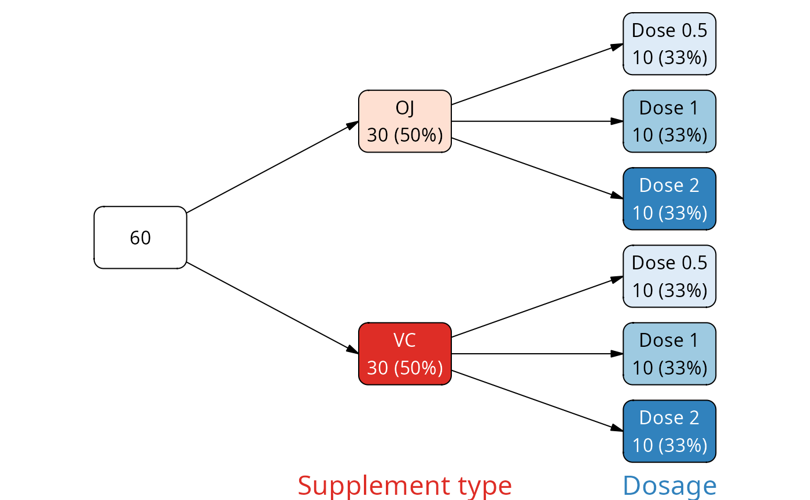
The graphical summary should be on leaf nodes only. It should show how the data in that particular node compares to the remaining nodes.
For this, we need a modified tg data frame - one which
assigns a leaf node id to each of the samples. We can do that with the
vtree_apply, combined with purrr’s
imap_dfr (you could also use Reduce and
friends). vtree_apply calls the provided function once per
node with the subset of the data frame that corresponds to that node; we
will use it to partition the data.
In addition, we will call vtree_apply only for the leaf nodes. That will ensure that each sample is shown only once in the resulting data set.
mask <- find_nodes(vt, leaf)
chunks <- vtree_apply(tg, vt, \(x) x, .mask = mask)
# the chunks correspond to the nodes
names(chunks)
#> [1] "node_4" "node_5" "node_6" "node_7" "node_8" "node_9"
as_tibble(vt)$node_key[mask] # same!
#> [1] "node_4" "node_5" "node_6" "node_7" "node_8" "node_9"
# the modified tg data frame
tg_mod <- imap_dfr(chunks, \(ch, nm) {
ch[["node_key"]] <- nm
ch })Now that we have the input data frame for ggplot2, we can proceed with constructing the plots. First draft shows how the plot should look like:
library(ggplot2)
# let us select one node to mark on the plot
df <- tg_mod |>
mutate(selected = ifelse(node_key == "node_4", "yes", "no"))
ggplot(df, aes(x = node_key, y = len, fill=selected)) +
geom_violin() +
geom_boxplot(width=.1, fill="white") +
scale_fill_manual(values = c(yes="red", no="grey")) +
theme_void() +
theme(legend.position = "none")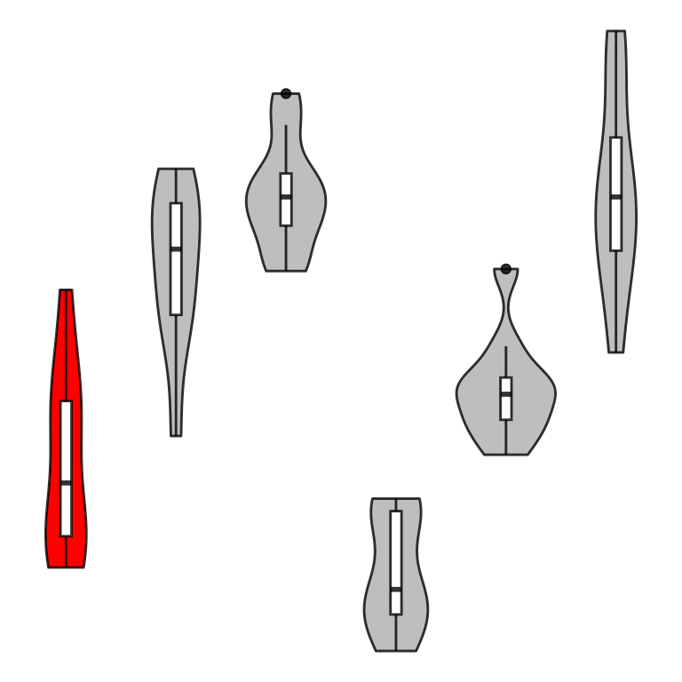
The void theme and removing the legend make the graphic better readable when it is squeezed into a tree node.
We just need to generate this plot for each leaf node, converting it to a grob.
plotfunc <- function(node, tg_mod) {
df <- tg_mod |>
mutate(node_key = factor(node_key, levels = names(chunks))) |>
mutate(selected = ifelse(node_key == node, "yes", "no"))
p <- ggplot(df, aes(x = node_key, y = len, fill=selected)) +
geom_violin() +
geom_boxplot(width=.1, fill="white") +
scale_fill_manual(values = c(yes="red", no="grey")) +
theme_void() +
theme(legend.position = "none")
ggplotGrob(p)
}
grobs <- map(names(chunks), plotfunc, tg_mod)
names(grobs) <- names(chunks)All that remains to do is 1) assign the grobs to the vtree object, 2) figure out how to best configure the layout.
vt |>
add_palette(palettes = c("Purples", "Blues")) |>
add_labels(fmt = "{node_val}", fmt_root = "{n}") |>
add_layout(dir = "tb", varspace = c(root = 1, supp=1, dose=2),
varsize = c(root = .4, supp=.4, dose=.9),
lwidth = 1,
lheight=.9) |>
mutate(grob = ifelse(leaf, grobs[node_key], NA)) |>
plot(legend=FALSE)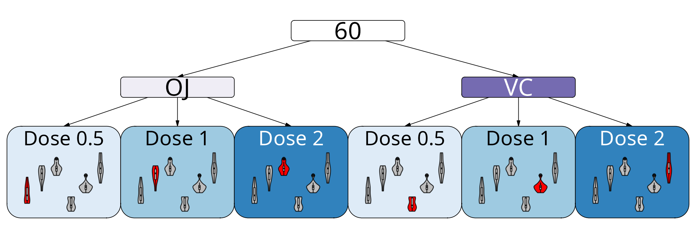
An alternative representation where we first split the tree by dosage and then by supplement type allows to better compare the effects of the supplement types:
vt <- vtree(tg, dose, supp) |>
add_aliases(col_alias = c(supp = "Supplement type",
dose = "Dosage"))
mask <- find_nodes(vt, leaf)
chunks <- vtree_apply(tg, vt, \(x) x, .mask = mask)
# the chunks correspond to the nodes
names(chunks)
#> [1] "node_5" "node_6" "node_7" "node_8" "node_9" "node_10"
as_tibble(vt)$node_key[mask] # same!
#> [1] "node_5" "node_6" "node_7" "node_8" "node_9" "node_10"
# the modified tg data frame
tg_mod <- imap_dfr(chunks, \(ch, nm) {
ch[["node_key"]] <- nm
ch })
grobs <- map(names(chunks), plotfunc, tg_mod)
names(grobs) <- names(chunks)
vt |>
add_palette(palettes = c("Purples", "Blues")) |>
add_labels(fmt = "{node_val}", fmt_root = "{n}") |>
add_layout(dir = "tb", varspace = c(root = 1, supp=2, dose=1),
varsize = c(root = .4, supp=.9, dose=.4),
lwidth = 1,
lheight=.9) |>
mutate(grob = ifelse(leaf, grobs[node_key], NA)) |>
plot(legend=FALSE)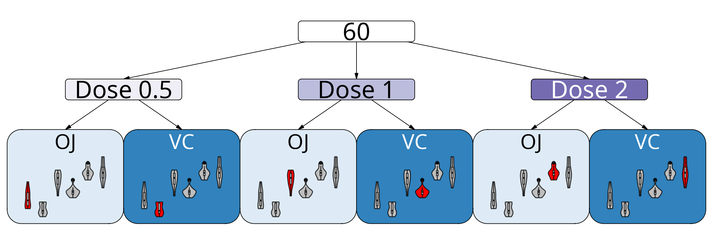